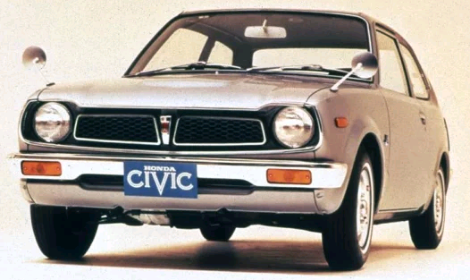
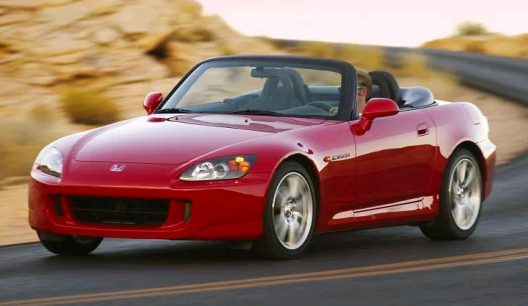
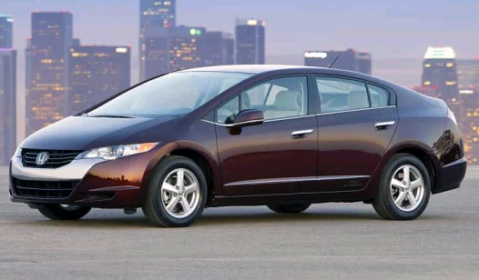

Categories
Here’s a list of our top 10 Hondas of All Time
One wonders what Soichiro Honda would think of today’s Honda automobiles. Do they still embody the spirit of iconoclastic creativity that the blacksmith’s son was famous for, the engineering excellence and spirit of adventure that encompasses the reputation of the company from motorcycles to motorcars?
1964 Honda S600What would you expect from this well-known maker of motorcycles? It’s a credit to Mr. Honda’s legacy that the first truly mass-produced Honda – and the car that put them on the map – would be this little gem. Light, high-revving, and fun as heck, the S600 was available as a coupe or roadster and was most definitely up to the task. It didn’t change much during its short 2-year production run, and it really didn’t need to, thanks to the thoughtful balance of the initial design. |
|---|

1973 to 1979 Honda CivicThe Civic embodies the inherent dichotomy that is Honda: Fun and free, or reliable and responsible? Both? Er. Maybe they’re on to something here. After all, if the S600 was all about fun, the 1973 Honda Civic was what practical (and fun) people needed. And boy, was it ever what car buyers in the U.S. needed. To understand why the 1973 Honda Civic is such a notable and landmark vehicle, consider the competition of the time: Ford Pinto, Chevrolet Vega, and Toyota Corolla. |
|---|
1976 Honda AccordThe ’73 Civic was great, right? Well, while Honda was getting ready to sell the Civic, they were also working on “design #671,” a larger car that would come to be called Accord. Honda had a weird French thing going on with car names at the time, which I suppose is better than made-up words and numbers. Whatever you called the Accord, most people called it a winner because buyers loved them. Once again, Honda had succeeded in building a car that answered the needs of car buyers at the time (OPEC Oil Embargo) with a practical design and a fun-to-drive configuration. |
|---|
1983 to 1987 Honda PreludeIf the first version of the Prelude failed to win over auto critics for being too small and bland, the second-generation model set down a marker of excellence for front-wheel-drive sport coupes. In typical Honda fashion, what made the Prelude great was its stealth personality. A seemingly normal and capable daily driver, the Prelude was also very attractive and exceptionally fun to drive. |
|---|
1988 to 1991 Honda CRXIt’s not as if the first try was terrible. Take the Honda Civic chassis, transform it into a stylish and sporty 2-seat hatch, bring it in at under 2,000 pounds, and you get a car that was attractive and offered over 50 mpg. Add a sporty Si model (with fuel injection vs. carburetors) and it was also quite fun to drive. It’s just that the second generation of the Honda CRX, including the Si variant, was so much better. A member of the Car and Driver “10 Best” list (along with the Civic), the 1988 model upgraded to a 4-wheel double-wishbone suspension and much better looks. |
|---|
1997 to 2001 Honda CR-VIf the CRX gained a reputation for sporty performance, the original Honda CR-V was an altogether different beast, one defined by plain practicality and clever features that made life easier. This “Comfortable Runabout Vehicle” really was exactly that: a comfortable and versatile appliance. So why on earth is it on this greatest-ever Honda list? Simple. The 1997 Honda CR-V was a landmark vehicle. It wasn’t the first compact crossover to hit the market, but it quickly overshadowed the field with a long list of creative accoutrements. In fact, it’s probable that the popularity of today’s compact crossovers is due largely to the success of this first CR-V. In that way, this little runabout ushered in major changes to vehicle development and customer preferences. |
|---|
1999 Honda OdysseyYes, a minivan is on this list. So what? Sure, it can never truly be fun to drive, but it does happen to be among the most versatile and practical vehicles ever conceived – and the 1999 Honda Odyssey was a landmark version of everything a minivan ought to be. It was also a symbol of the power of Honda’s intent to conceive, build, and package vehicles that effortlessly executed their given tasks. That wasn’t the case with the 1995 version. The first Odyssey was quirky, and not in a good way. Too small and lacking handy sliding side doors, it languished on dealership lots. The answer from Honda was simply to follow the leader – in this case, Chrysler – and then out-do it with arguably better engineering and creative packaging. |
|---|
1999 to 2006 Honda InsightI remember the first time I saw an Insight. I was immediately intrigued by it. It looked so, well, futuristic. And I remember the first time I rode in one. I hated it. Odd-looking with a harsh ride and no interior room, the Insight is nonetheless a greatest-ever Honda, and for one obvious reason: it was the first hybrid in America. That, in addition to its wind-cheating design and ridiculous fuel economy ratings, makes it a landmark vehicle that deserves a spot in the lexicon of game-changing automobiles. |
|---|
2004 to 2008 Honda S2000With few notable exceptions, Honda’s greatest vehicles are often improvements upon originals. The S600, Prelude, CRX, Odyssey, and S2000 sports car are prime examples of the trend, and show what happens when an automaker listens carefully to market feedback and then makes targeted improvements. From the time it debuted for 2001, the S2000 was unabashedly and totally a car that demanded to be driven hard to be fully appreciate |
|---|
2008 Honda FCX ClarityThe first day I drove the FCX Clarity, I knew immediately how lucky I was to participate in a landmark moment. And it kind of freaked me out a little, because it was such a different experience. The car was so quiet, so smooth…except for that electric whine and the thuds of the compressor. It was so un-carlike in its way, yet still – in every way – just like a plain ‘ol sedan. Ha. Not quite. The FCX Clarity was never plain or normal. Cloaked as a sedan with a mildly futuristic design, it grew to become a symbol of new-era innovation. What’s more, this hydrogen fuel cell-powered vehicle was the first of its kind to be leased to American consumers, a notable step toward changing perspectives on the type of energy we use to get around. |
|---|
 Ferrari
Ferrari Honda
Honda Ford
Ford Suzuki
Suzuki Lamborghini
Lamborghini Lexus
Lexus Jaguar
Jaguar BMW
BMW Mercedes-Benz
Mercedes-Benz